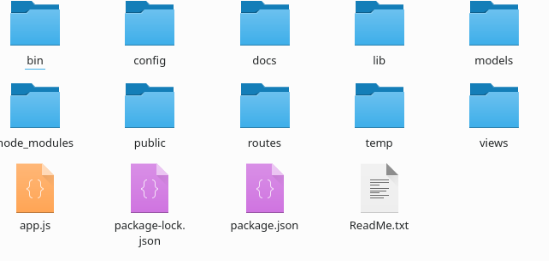
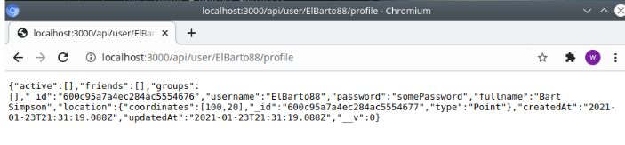
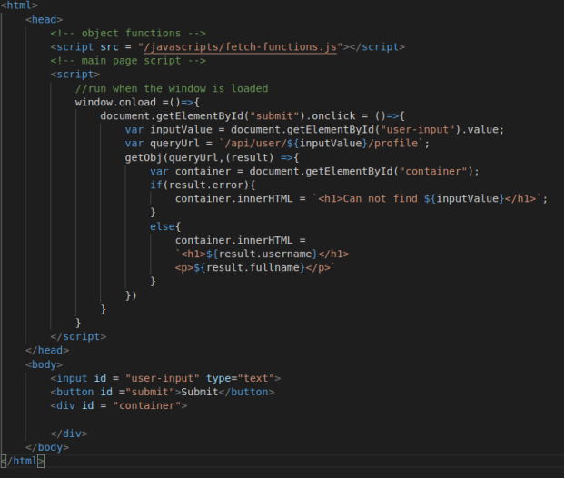
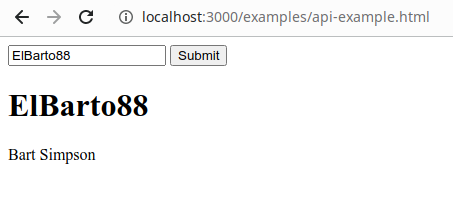
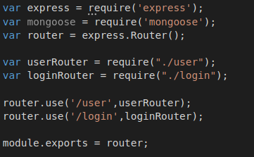
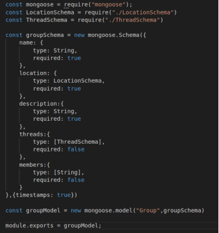
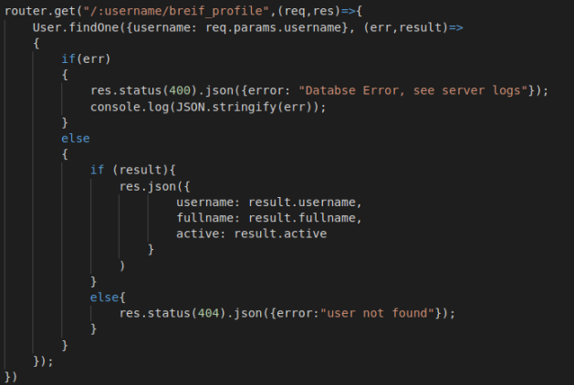

To first use the server , you must have Node, and git installed.
On Ubuntu linux, you simply have to put into the terminal:
sudo apt install git node npm
On mac, to install git , go to this site:
On windows, go to this site:
git for windows will also give you a command line like those found on Mac and Linux, called git bash.
To download the project files, go into your terminal(Mac or Linux) or git bash(Windows), and type:
git clone https://gitlab.doc.gold.ac.uk/filigree/filigree.git
Then you type:
cd filigree
Which will bring the terminal to the folder that the project is stored in, which will be a subfolder in the your user folder.
And next to install all the packages:
npm install
The basic layout was made by express itself.
So far, the project looks like this:

Now i am going to outline watch each folder and file is for.
www
bin contains one file, “www”. This script starts off the server , does some startup tasks then moves to app.js, where the main code for the server is.
To start up the server , you type “node ./bin/www” into the terminal. By default, the server starts on port 3000, but you can set the port by putting PORT=80, or whatever port you want to use , on the same line before like this: “PORT=80./bin/www”. On Linux , this will require you to be the superuser, on windows you may get an alert from the firewall.
The main code for the server, where all the middleware and routes are called from.
This contains help pages and other documentation, including this one. “api-specification.md” describes what the API does. In this project we aim to implement everything written inside the api-specification.
This contains the files that make up the web site that aren’t server related, like the HTML pages, images, css and other files.
Inside public/javascripts is the file fetch-functions.js. In this file is a set of functions useful for pushing and pulling objects from the server. The functions are an overlay over the Fetch api ( https://developer.mozilla.org/en-US/docs/Web/API/Fetch_API)
These contain the “routes”, the different functions that run depending on what page the user asks for. For example: when the user goes to the “/api/user/elBarto88/profile” page, it gets processed by the /api/users/index.js file and he will get back a JSON object with the profile of the requested server.
Temporary files not needed long term.
These are for the use of Mongoose, the node module that enables the database and the MongoDB database to communicate with each other. The models are similar to classes in Java. Their is currently models that describe: User, Group, Thread etc. Their is additionally schema that work as sub-objects to be embedded inside the before-mentioned objects.
This contains functions that are to be used in other files, currently it contains the functions
gecode.js and verifyToken.js. verifyToken is used to verify the user once logged in, and geocde is a set functions to convert coordinates to addressees and visa versa using the Google maps api.
To include a function from a libary
The API is how the server and the web pages speak to each other.
For example , if you send a GET request to /users/ElBarto88/profile (while logged in as a user), you get back an object that looks like this:

The object is a JSON object, a JSON object is the same thing as a JavaScript object, but with some constraints so it can be sent over the internet or saved in a file.This includes the key having to have quotation marks round it, like {“name”: “Andrew”}. Using the api , you can login, create users, remove users, get posts, create groups and other tasks. Everything that the API does is in the the /docs/api-specification.md file.
Fetch Functions
Using the functions in /public/javascripts/fetch-functions.js file , you can push and pull objects from the server.
function postObj(url, object, callback)
This function posts an object to the server , and passes the result an argument to the callback function, a call back function is a function you enter to execute after a result has been received
A simple example of a callback function in use is:
postObj(url, object, (result)=> console.log(result)),
Which will simply console.log the result of the request once the web page receives it.
function getObj(url,callback)
This function is similar to the one above, except it is for GET requests, which can not have bodies.
For API functions that require you to be logged in ,
these functions exist:
function postObjWithToken(url, object,token,callback)
function getObjWithToken(url,token,callback)
These functions work the same as the functions above, except these take a token which is used for authenticating the user. I will explain this in the authentication section.
Simple Example of API in use:
The API , using JavaScript on a website, can display content from the server on the web page.
The below example will search the database for a user and display the users details:

This is a very simple example of the API at work.
The first line is “window.onload = () => { “. This adds a listener to .onload event. When the window loads, the code inside the curly brackets is run. This is an example of a callback function.
Inside the function is another event listener being assigned, this time, when the button with the submit id is clicked, the function assigned is run.
In the function, firstly the input value to search for is put into a variable. Then the queryUrl string is constructed with the input value. Then finally the getObj function is called, the first argument is the query URL, and then the second is a callback function. The result is then passed to callback function which will execute when the server responds.
If the server sends back an error object, then it inserts into the container div the message “Can not find <user entered>”, otherwise, if the user does exist, it then displays the User’s username , and their fall name , to the screen, as shown below:

Routes are different functions that get executed depending on what address the user has requested.
The routes of this server will align with the routes in the /docs/api-specification.md file.
Groups of routes are contained within routers, and routers can also contain other routers. The routers are stored within the routes folder. The main route is the /api/ route. In the app.js file, the main starting point of the application, their are two routes:
app.use('/', indexRouter);
app.use('/api',apiRouter);
The route objects are imported via require statements at the top of the app.js file:
var indexRouter = require('./routes/indexRouter');
var apiRouter = require('./routes/api');
The first one is the most simple one, as you can see in the /routes/indexRouter.js file:
var express = require('express');
var router = express.Router();
/* GET home page. */
router.get('/', function(req, res, next) {
res.render("index.html");
});
module.exports = router;
This is simple , when a request for just the website domain and nothing after it comes in, it will send the user the index.html file.
The module.exports line tells node what should be exported to files that call it via require, which is in this case the express router object.
The other route, for when the user enters “/api”, followed by a / and anything else, this code from /routes/api/index.js will run:

Inside this router is contained, at the moment, two other routers. userRouter and loginRouter. But as we progress with the project we will add more routes for each section of the api.
When the user asks for “/api/user”, they go the “/api/user/index.js” file, and for the login route , to “/api/user/login” file. If the require(“path”) function fails to find a JavaScript file at the path provided, it then looks for a directory with the same name.
Middleware are functions that execute no matter address is selected, except when placed inside a router, when it means that it will only be used on the relative route , such as “/api/user”.
In the app.js file is the middleware that run everytime:
app.use(logger('dev'));
app.use(express.json());
app.use(express.urlencoded({ extended: false }));
app.use(cookieParser());
app.use(express.static(path.join(__dirname, 'public')));
Each middleware does a different task. The first logs all connections that happen too the console. The second parses JSON objects passed to it, the third passes queries passed in the URL. Fourth parses cookies , and the last runs a static file server that serves files from the public directory.
Authentication and Verification is dealt with using the JSON web token library ( https://www.npmjs.com/package/jsonwebtoken). The authentication token is received from the /api/login route, when a object containing the token is returned in exchange for a correct username and password being POSTed to it.
To make a route login only, which I recommend we make all routes, except the login route , you simply include the middleware as follows:
const verifyToken = require("../../../lib/verifyToken");
const filigreeConfig = require("../../../config/filigree.json");
if(filigreeConfig.verifcationOn)
{
router.use(verifyToken);
}
Simply adjusting the path to reflect wherever it is placed relative to the imported files. (“../” represents going up one directory in the tree) . On to the req object it attaches the field username, so in the routes you can check what user is logged in by calling req.username.
MongoDB is the database system that is being used for the application. Details about MongoDB can be found on it’s website: https://docs.mongodb.com/manual/ .
The library being used to communicate with MongoDB is called Mongoose ( https://mongoosejs.com/ ). Mongoose works through models, which represent collections in the database. Models are stored in the model folder. Below is the Group.js model:

This model describes all the fields that the object has. For each field, the object has listed its type , and whether its required or not. A type surrounded by [square brackets] is an array of that type.
The model, when imported into another file, can be used to perform operations on the data.
Here is it in use in the user route:
To add an object to the database:
//post new user to database
router.post("/",(req,res)=>
{
let newUser = new User(req.body);
newUser.save()
.then((result)=> res.json(result))
.catch((err) => res.status(400).json(err))
})
To get an object from the database:

More detail can be found on all the operations can be found here: https://mongoosejs.com/docs/queries.html